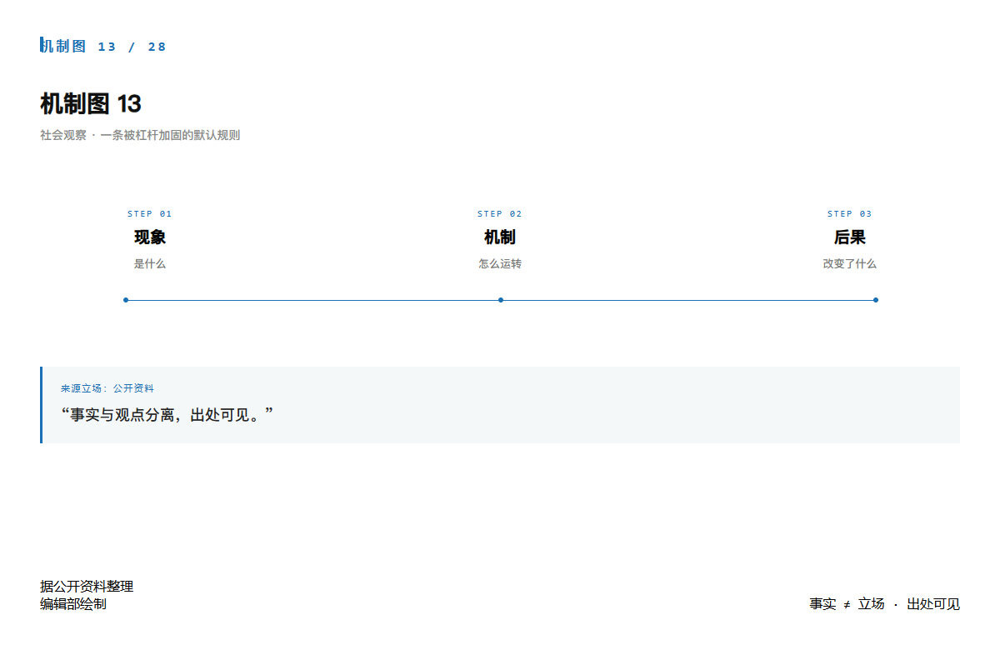

谁喊得大声，谁就有理
社会观察 · 一条被杠杆加固的默认规则
热搜榜第三位挂着一个陌生的词条。点进去，几十万条评论已经排好队，有人喊口号，有人贴截图，有人把同一句话复读了一万遍。你想找个中立的落脚点，翻了几页，没找到。
下面的数字和判断，来自公开报道与行业分析口径。热搜有营销产业链，是媒体调查报道说的；平台持续治理、从未售卖热搜，是平台公告说的。两边都写，不替谁选一边。具体个案的指控，一个字不碰。
你以为自己在围观。其实你每一次点开、停留、转发，都在替这套规则投一票。它不需要谁下令，靠的就是你我手指上的这点动作。
四因子排序里，话题因子给了标签明确的权重。于是「带什么话题」从一种习惯变成一门技术：起一个容易共情的标签，配一段容易站队的导语，再找一批愿意首发的账号。
这套操作对娱乐事件和社会事件一视同仁。后果是议程不再自然浮现，它可以被组织。谁先组织好，谁就拿到「发生了什么」的定义权。先发优势，是从这一步开始的。
我每次看到一个新词突然铺满屏幕，都会想：背后有没有人在按流程操作。多数时候没有。但当操作的门槛足够低，有没有就不重要了。重要的是它随时可以发生。
互动量按数字计价，可社交网络里的互动分布极不均匀。少数头部账号的一次转发，顶得上普通用户几万次点赞。这是行业通行的观察，不是精确统计，但方向很少有人否认。
撬动头部账号于是成了标准战术。大号转发本身是正常社交行为；可当「撬动」变成可购买、可组织的服务，互动量就不再量民意，而在量动员能力。算法分不清，它只认数字。
普通用户以为自己在声援，贡献的却是一次计价。声援的方向未必错，但把「人多」折算成「有理」，这个折算才是问题。支持者多不多，和对不对，本来就是两个问题。
📌 一个值得记住的判断
互动量测的是动员能力，不是民意。当「人多」被折算成「有理」，安静的、不擅长动员的表达，从起跑线上就矮了一截。
据媒体调查，热搜存在明码标价的营销产业链，冲榜、维护、撤榜各有报价。报价随时间和治理变化，这里不引具体数字。这是调查报道的一面，得如实写。
另一面也得写：平台方的口径一直是「从未售卖热搜、持续治理违规」，并且多次公告整治、处罚过一批账号。两边都有公开依据。真实状态是拉锯——治理收窄了明面通道，只要注意力还堆在单一榜单上，绕道的动机就一直在。
伤害是结构性的。注意力可以被采购，「谁的叙事被看见」就有了第二套不在明面上的定价。普通用户，还有不习惯情绪化动员的那些表达，在两套定价里同时吃亏。
媒体调查报道的概括性转述
「热搜榜上每一条话题背后，都可以有一门生意。」
据媒体对热搜营销产业链的调查报道，属概括性转述，立场在调查方，非平台方。平台方的治理口径同样在案，两边并陈。

▲ 一条话题被推上榜单的三条杠杆（编辑部绘制）
标志不是某次事件，而是人的行为预期变了。发帖前先想「这个会不会爆」，争论时先估「我这边人多不多」，写澄清时先怕「会不会被冲」。规则不再需要谁执行，它长进了肌肉记忆。
能谈的方向有一个：上榜依据能不能更透明。比如定期公开冲榜违规的处置数量和类型。规则不透明时，每个人都只能按最坏预期行动；透明一点，那套肌肉记忆才有可能松动。这不是解药，是个可以争取的口子。
✍️ 你发一条东西之前，会先想它会不会爆吗？
是越来越谨慎，还是干脆不发了？评论区说说。觉得有用，点个赞、点个「在看」，转给也在纠结要不要发的人。
下一篇：当「会不会爆」变成下意识，规则就算长进了身体里。
参考
媒体对热搜营销产业链的调查报道（冲榜、维护、撤榜的报价与产业链描述）；平台方公告口径：从未售卖热搜、持续治理违规，多次整治并处罚账号。两边并陈，不替谁选一边。
四因子排序与话题因子权重、头部节点互动放大效应，据公开行业分析与网络结构的通行观察；后者为方向性判断，非精确统计。「两套定价系统」为分析性归纳。
社会观察，不站任何性别立场。批评的是分发结构，不是任何群体。事实据公开来源，两边说法并陈；未证实指控不转述、不评价。拆解规则是为了理解，不是行动指南。